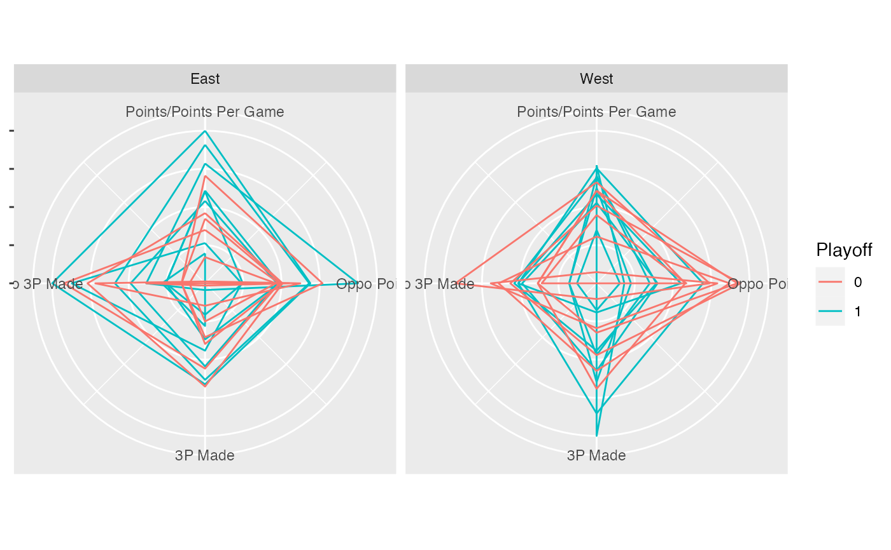

coord_radial.RdA radial (spider) coordinate. A wrapper of the function coord_polar() by
forcing it linear.
coord_radial(theta = "x", start = 0, direction = 1, clip = "on")variable to map angle to (x or y)
Offset of starting point from 12 o'clock in radians. Offset
is applied clockwise or anticlockwise depending on value of direction.
1, clockwise; -1, anticlockwise
Should drawing be clipped to the extent of the plot panel? A
setting of "on" (the default) means yes, and a setting of "off"
means no. For details, please see coord_cartesian().
The serial histogram and serial density cannot be applied on a radial coordinate yet.
if(require("dplyr")) {
ggplot(NBAstats2021, mapping = aes(colour = Playoff)) +
geom_serialaxes(
axes.sequence = c("PTS", "OPTS", "3PM", "O3PM", "PTS"),
scaling = "variable"
) +
coord_radial() +
scale_x_continuous(
breaks = 1:5,
labels = c("Points",
"Oppo Points",
"3P Made",
"Oppo 3P Made",
"Points Per Game")) +
scale_y_continuous(labels = NULL) +
facet_wrap(~CONF)
}
#> Loading required package: dplyr
#>
#> Attaching package: ‘dplyr’
#> The following objects are masked from ‘package:stats’:
#>
#> filter, lag
#> The following objects are masked from ‘package:base’:
#>
#> intersect, setdiff, setequal, union
